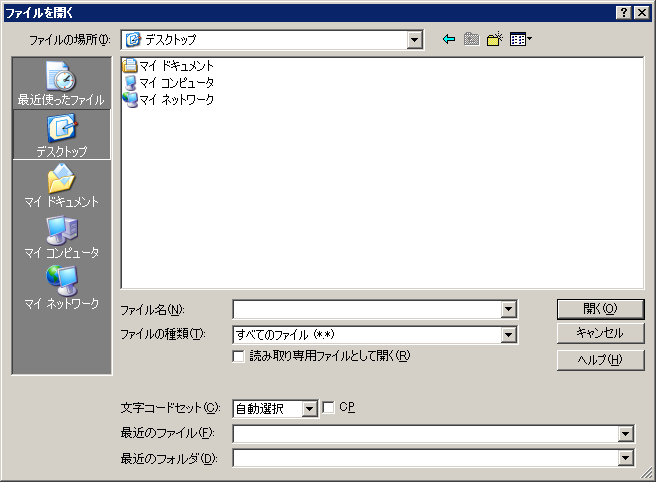

開く
ディスクにあるファイルを開くことができます。
(無題)で変更していないウィンドウの場合は、今のウィンドウでファイルを開きます。
それ以外の場合は、新しいウィンドウを作成して開きます。
フォルダーの初期値はカレントディレクトリ/MRUの1番目/指定フォルダーを共通設定 『編集』で指定可能です。(2.0.6.0 以降)

・[読み取り専用ファイルとして開く]
チェックすると、ビューモードでファイルをオープンします。ファイルを編集することができなくなります。
ファイルを閲覧目的に使用している場合、大事なファイルをうっかり編集してしまわないようにチェックするといいでしょう。
・[文字コードセット]
文字コードセットは、以下の中から選択できます。
開くときの文字コード指定は、開くファイルがどの文字コードセットで書かれているのかを指定します。
また自動判定機能を使えば、文字コードセットの違いを意識せずに、読み込みや編集・保存ができます。
◆自動選択
デフォルトです。
文字コードセットを自動的に認識します。
ファイルの先頭をある程度まで読み込み、各文字コードセット特有のデータの出現数を調べ、文字コードセットを判断します。
文字コードの認識を間違えることがあるかもしれません。
認識処理を行うため、読み込みに時間が掛かります。
最近のパソコンの動作速度ならば、十分な速度が得られると思います。
>Shift_JISのファイルでも、半角カタカナが含まれている場合、EUCと区別がつかないため、よく間違えます。
半角カタカナらしき箇所が文字化けしている場合、たぶんまず間違いなくほとんどがこのケースだと思います。
半角カタカナを使わなくしたりEUCを撲滅したりして下さい。
◆SJIS
Shift_JISのファイルとして読み込みます。
ファイルを読み込んだら内部的にUnicodeに変換して管理します。
◆JIS
JISコードのファイルとして読み込みます。
ファイルを読み込んだら内部的にUnicodeに変換して管理します。
◆EUC
EUCコードのファイルとして読み込みます。
ファイルを読み込んだら内部的にUnicodeに変換して管理します。
◆Latin1
Latin1(Windows-1252)なコードのファイルとして読み込みます。
◆UTF-16
Unicode(UTF-16)なコードのファイルとして読み込みます。
◆UTF-16BE
Unicode(UTF-16BE)なコードのファイルとして読み込みます。
◆UTF-8
Unicode(UTF-8)なコードのファイルとして読み込みます。
◆CESU-8
Unicode(CESU-8)なコードのファイルとして読み込みます。
◆UTF-7
Unicode(UTF-7)なコードのファイルとして読み込みます。
・[CP]
文字コードセットでコードページを選択できるようにします。(sakura:2.2.0.0以降)
・[最近のファイル]
最近使ったファイルの一覧をアルファベット順に見ることができます。
・[最近のフォルダー]
最近使ったフォルダーの一覧をアルファベット順に見ることができます。
フォルダーを選択すると、現在のフォルダーが変化します。
・[ファイルの種類]
ファイルの種類には、すべてのファイル、テキストファイル以外に、タイプ別設定で設定しているタイプ（拡張子）がセットされています。
 ヒント
ヒント
開く（ドロップダウン）をツールバーに登録すると開くボタンの横に、最近使ったファイルのドロップダウンメニューが表示され直接選択できます。
ヒント
ダイアログ表示時にプレースバーを表示します。(sakura:1.5.8.0以降)
■マクロ構文
・構文: FileOpen( str1 : String, int2 : Integer, int3 : Integer, str4 : String );
str1 ファイル名
int2 文字コード（省略可能、ただしPPAマクロは省略不可）(2.1.0.0以降)
int3 ビューモード（省略可能、ただしPPAマクロは省略不可）(2.1.0.0以降)
str4 デフォルトフォルダー・ファイル名（省略可能、ただしPPAマクロは省略不可）(2.1.0.0以降)
・記録: ×
・解説
ファイル名に""(空文字列)を指定すると、ファイルダイアログを表示します。
文字コードは以下のいずれかを指定することができます。
0 SJIS
1 JIS
2 EUC
3 UTF-16
4 UTF-8
5 UTF-7
6 UTF-16BE
7 CESU-8
8 Latin1(Windows-1252)
99 自動認識（省略時規定値）
90 CP_ACP (sakura:2.2.0.0以降)
91 CP_OEM (sakura:2.2.0.0以降)
コードページ番号 (sakura:2.2.0.0以降)
ビューモードは、0（false、省略時規定）、または1(true)を指定します。
デフォルトフォルダー・ファイル名は、ダイアログのデフォルトの表示位置と、デフォルトの名前を指定します。
省略時は、共通設定に従った表示位置になります。
 注意
注意
開いた後の文字コードは、GetCharCodeで取得できます。